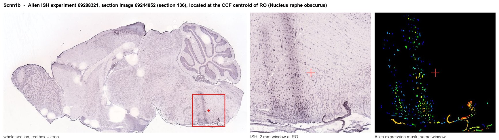
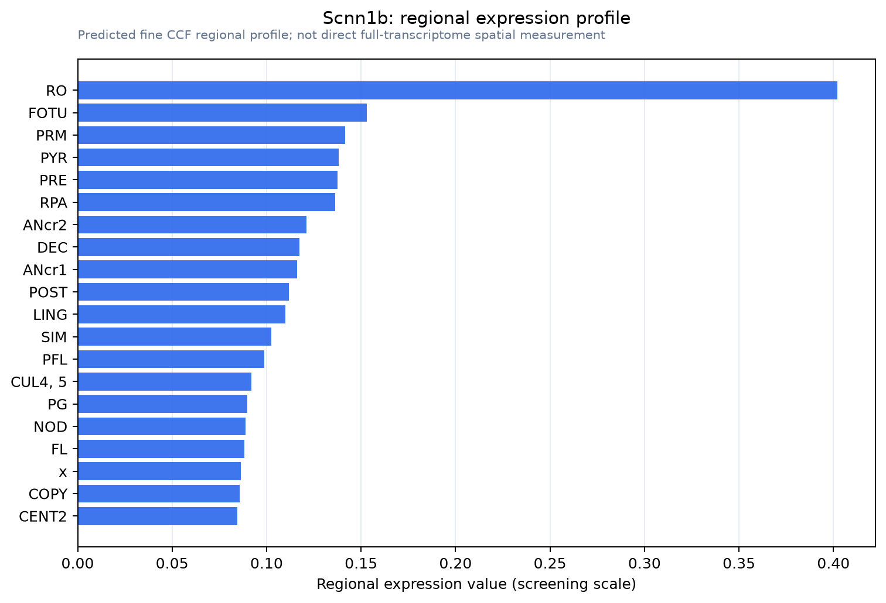

Scnn1b
Epithelial sodium channel subunit beta (Amiloride-sensitive sodium channel subunit beta) (Beta-NaCH) (Epithelial Na(+) channel subunit beta) (Beta-ENaC) (Nonvoltage-gated sodium channel 1 subunit beta
Spatial tier: RESTRICTED · Class: ION_CHANNEL · Top region: RO (Nucleus raphe obscurus) · Positive regions: 15/554
Function in RO: evidence, prediction, innovation
- Gene function
- Scnn1b encodes the beta subunit of the epithelial sodium channel (ENaC). With the alpha and gamma subunits it forms a constitutively open, amiloride-sensitive, highly sodium-selective channel regulated by aldosterone and by proteolytic cleavage. In kidney, lung and colon it sets sodium reabsorption; mutations cause Liddle syndrome and pseudohypoaldosteronism.
- Region function
- Nucleus raphe obscurus is the caudal medullary raphe serotonergic cell group; it projects to spinal cord and to respiratory and motor nuclei and contributes to central CO2/pH chemoreception, thermoregulation and autonomic and motor tone.
- Published in this region
- inferred No region-specific literature found. The closest findings are that serotonergic medullary neurons near the area postrema are activated by raised plasma sodium and relay this interoceptive signal forward (Miller 2014), while da Silva 2013 showed raphe obscurus 5-HT neurons are not required for hypoxic ventilatory and thermoregulatory responses; ENaC subunits themselves have been studied in sodium-sensing circumventricular tissue rather than in raphe obscurus.
- Predicted function
- Prediction: in raphe obscurus, beta-ENaC would supply a tonic sodium leak that sets the resting potential and spontaneous pacemaker firing of 5-HT neurons and would make their firing rate track CSF sodium and osmolality in addition to CO2 and pH. Local amiloride or benzamil, or deletion of Scnn1b in Pet1/Tph2-defined neurons, is predicted to hyperpolarise these cells, reduce tonic serotonergic drive to spinal motor and respiratory circuits, and blunt sodium-appetite and ventilatory responses to hypernatraemia while leaving the hypoxic response unchanged.
- Innovation
- ★★★★★ 5/5 A sodium-leak channel in a serotonergic chemosensory nucleus is a mechanistically attractive and completely unexamined idea, and floxed Scnn1b plus Pet1/Tph2 drivers make it immediately testable.
- Tools
- Scnn1b floxed and Liddle-syndrome transgenic mice; amiloride and benzamil as blockers; anti-beta-ENaC antibodies; raphe 5-HT neurons targetable with Pet1-Flpe, Tph2-CreERT2 and Slc6a4-Cre.
- References
Direct evidence located at the region

Allen ISH experiment 69288321, section image 69244852 (section 136): the section that contains the CCF centroid of Nucleus raphe obscurus according to the Allen image-to-atlas alignment (reference_to_image), with a 2 mm window around that point. Left: whole section, red box = window. Middle: ISH signal. Right: Allen's expression-mask view of the same window. open this image in the Allen viewer
Direct spatial evidence

Regional expression figure

Predicted WMB × fine-CCF profile; not direct full-transcriptome spatial measurement.
Spatial profile
Evidence and specificity
- Evidence status
- PREDICTED_FINE
- Direct sources
- None; predicted localization only
- Exclusive threshold
- 12 positive regions out of 554
- Spatial specificity
- 0.369
- Top-region fraction
- 0.106
- Filter status
- PASS
Interpretation limits
- Cell-type-to-region projection is imputed expression, not direct spatial measurement.
- Adult reference atlases do not establish stability across age, sex, strain, state, or disease.
- Transcript abundance does not guarantee protein abundance or genetic-tool performance.